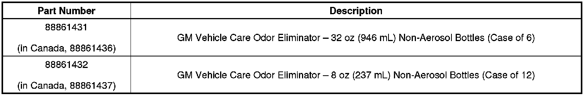

Interior - Eliminating Unwanted Odors in Vehicles
INFORMATIONBulletin No.: 00-00-89-027G
Date: November 28, 2012
Subject: Eliminating Unwanted Odors in Vehicles
Models:
2013 and Prior GM Passenger Cars and Trucks
Attention:
Please direct this bulletin to the PARTS, USED CAR, BODY SHOP and SERVICE Managers.
Supercede:
This bulletin is being revised to add the 2013 model year and update the Parts Information. Please discard Corporate Bulletin Number 00-00-89-027F (Section 00 - General Information).
Vehicle Odor Elimination
General Motors offers a product that may control or eliminate odors in the interior and luggage compartment areas of GM vehicles. GM Vehicle Care Odor Eliminator is a non-toxic, biodegradable odor remover. This odorless product has been shown to greatly reduce or remove objectionable smells of mold and mildew resulting from vehicle water leaks (as well as customer created odors, i.e. smoke). You may use GM Vehicle Care Odor Eliminator on fabrics, vinyl, leather, carpet and sound deadening materials. It may also be induced into HVAC modules and instrument panel ducts (for the control of non-bacterial related odors).
Important
This product leaves no residual scent and should not be sold as or considered an air freshener. Product action may result in the permanent elimination of an odor and may be preferable to customers with allergies who are sensitive to perfumes.
How to Use This Product
GM Vehicle Care Odor Eliminator may be sprayed on in a ready-to-use formula or used in steam cleaners as an additive with carpet shampoo. This water-based, odorless product is safe for all vehicle interiors. Do not wet or soak any interior surface that plain water would cause to deteriorate, as this product will have the same effect. Also avoid letting this product come into contact with vinegar or any acidic substance. Acid-based products will hamper the effectiveness of, or render GM Vehicle Care Odor Eliminator inert.
Instructions and cautions are printed on the bottle, but additional help is available. If you encounter a difficult to eliminate or reoccurring odor, you may call 1-800-955-8591 (in Canada, 1-800-977-4145) to obtain additional information and usage suggestions.
Important
This product may effectively remove odors when directly contacting the odor source. It should be used in conjunction with diagnostic procedures (in cases such as a water leak) to first eliminate the root cause of the odor, and then the residual odor to permanently correct the vehicle condition.
Vehicle Waterleak Odor Elimination
STEP ONE:
Confirm that all water leaks have been repaired. Determine what areas of the vehicle were water soaked or wet. Components with visible mold/mildew staining should be replaced. Isolate the odor source inside the vehicle. Often an odor can be isolated to an area or component of the vehicle interior by careful evaluation. Odor evaluation may need to be performed by multiple persons. Another method of isolating an odor source is to remove and segregate interior trim and components. Plastic sheeting or drop cloths can be used to confine seats, headliners, etc. to assist in evaluation and diagnoses. If appropriate the vehicle and interior trim should be evaluated separately to determine if the odor stays with the vehicle or the interior components. Odors that stay with the vehicle may be isolated to insulating and sound deadening materials (i.e. water leak at the windshield or standing water in the front foot well area caused mold/mildew to form on the bulkhead or kick panel sound deadening pads. If the interior is removed the floor pan and primed/painted surfaces should be treated with bleach/soap solution, rinsed with clean water and dried. Interior surfaces should then be treated with GM Vehicle Care Odor Eliminator product before reinstalling carpet or reassembling.
The GM Vehicle Care Odor Eliminator product is an effective odor elimination product when used properly. It must come into direct contact with the odor source. It should be used in conjunction with diagnostic procedures to first eliminate the root cause of the odor. Some procedures for use after odor root cause correction are:
STEP TWO:
- Use the trigger spray head.
- Put a drop of dish soap the size of a quarter in the bottom of a bottle.
- Add 8 oz. of GM Vehicle Care Odor Eliminator (1 cup) to the dish soap and top off the bottle with tap water.
- This formula should be used on hard surfaces (dash, interior plastic molding, and floor pan).
STEP THREE:
The third step to neutralizing the vehicle is a light to medium treatment of all carpeting and upholstered seats with the GM Vehicle Care Odor Eliminator formula and a wide fan spray setting (at full strength) (i.e.: carpeting on the driver's side requires 4-5 triggers pulls for coverage). The headliner and trunk should be sprayed next. Lightly brushing the formula into the carpeting and upholstery is a recommended step for deep odor problems. The dash and all hard surfaces should be sprayed with dish soap/water mixture. Let stand for 1-2 minutes then wipe off the surface.
STEP FOUR: (vehicle ventilation system treatment)
The ventilation system is generally the last step in the treatment of the vehicle.
- a. Spray the GM Vehicle Care Odor Eliminator formula into all dash vents. (1-2 trigger pulls per vent).
- b. Start the vehicle and turn the vehicle fan on high cool (not A/C setting).
- c. Spray the formula (10 trigger pulls) into the outside fresh air intake vent (cowl at base of windshield).
- d. Enter the vehicle after 1 minute and wipe off the excess formula spurting out of the dash vents.
- e. Smell the air coming from the dash vents. If odors are still present, spray another 5 triggers into the cowl, wait another minute and smell the results. Once you have obtained a fresh, clean smell coming from the vents, turn the system to the A/C re-circulation setting. Roll up the windows, spray 3-5 pumps into the right lower IP area and let the vehicle run with the fan set on high for 5-7 minutes.
Additional Suggestions to Increase Customer Satisfaction
Here are some additional ideas to benefit your dealership and to generate greater customer enthusiasm for this product.
- Keep this product on-hand for both the Service Department and the Used Car lot. Add value to your used car trades; treat loaner and demo cars during service and at final sale to eliminate smoke, pet, and other common odors offensive to customers. Make deodorizing a vehicle part of your normal vehicle detailing service.
- Consider including GM Vehicle Care Odor Eliminator as a give-away item with new vehicle purchases. Many dealers give away as "gifts" various cleaning supplies at time of delivery. GM Odor Eliminator is one of a few products GM offers that has as many uses in the home as in the vehicle. Customers may find this product can be used for a host of recreational activities associated with their new vehicle, such as deodorizing a boat they tow, or a camper.
- GM Odor Eliminator and many of the GM Vehicle Care products offer you the chance to increase dealership traffic as these superior quality products cannot be purchased in stores. Many Dealerships have product displays at the parts counter. Consider additional displays in the Customer Service Lounge, the Showroom and at the Service Desk or Cashier Window. Many customers who purchase vehicles and receive regular maintenance at your dealership may never visit the parts counter, and subsequently are not exposed to the variety and value that these products offer.

Parts Information

Disclaimer